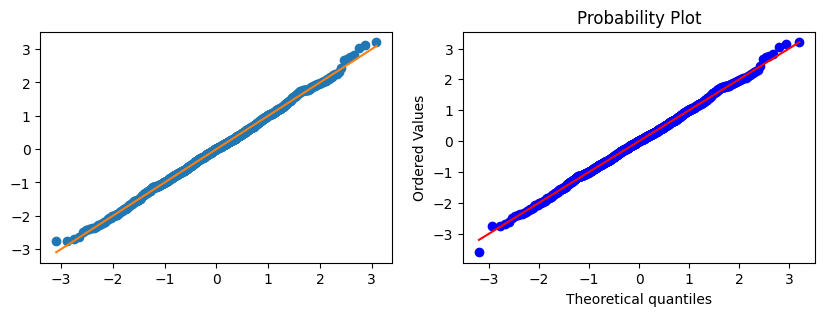
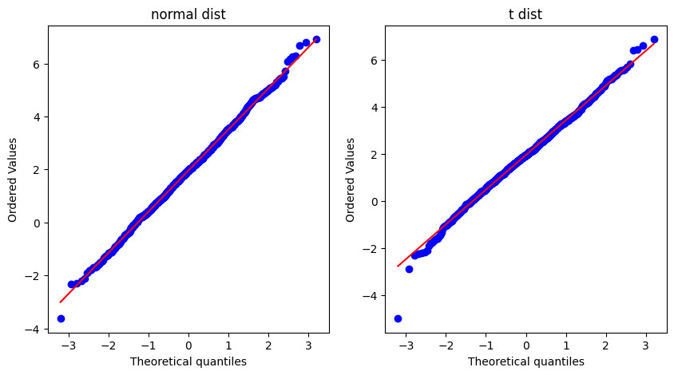
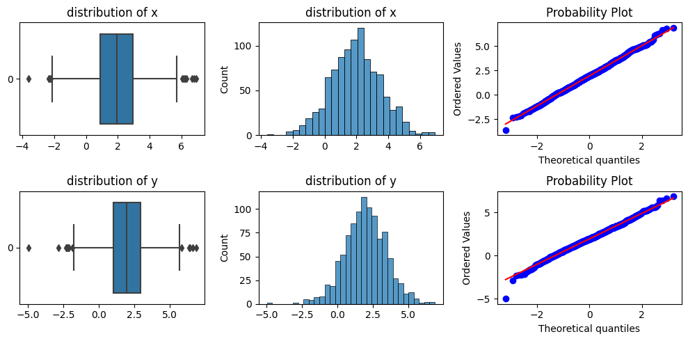
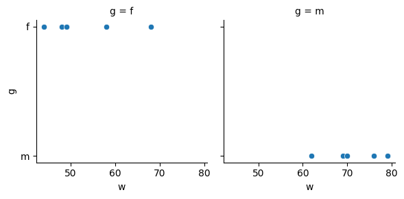

import
- 우리가 관측한 \(x_1\dots x_{1000}\) 이 \(N(2,1.5^2)\) 에서 나온 샘플인지 궁금하다.
- 아이디어
관측한 값을 순서대로 나열하여 \(x_{(1)}\dots x_{(1000)}\)을 만든다.
파이썬이나 R로 \(N (2, 1.5^2)\) 에서 1000개의 정규분포를 생성. 그리고 순서대로 나열하여 \(\tilde x_{(1)}\dots \tilde x_{(1000)}\) 을 만는다.
\(x_{(1)} \approx \tilde x_{(1)} \dots x_{(1000)} \approx \tilde x_{(1000)}\) 이면 우리가 관측한 \(x\)는 정규분포일 것이다.
- 값을 정렬
- 편리한 계산을 위해 표준화 과정을 거침
- 가장 작은 관측값 2개를 추출
- 아래의 값을 확인해 보니 얼추 비슷하게 나오는 것 같다.
- 이제 이론적인 값을 생성
- \(xx \approx q\) 임을 확인하기 위해서 \((q,q)\) 그래프와 \((q, xx)\) 그래프를 그려서 겹쳐보자.
- 해석 : 점들이 주황색선 근처에 모여있을 수록 정규분포에 가깝다고 볼 수 있다.
- 아래와 같은 방법으로도 그릴 수 있음.
- 우리가 그린 그림과 비교
fig,axes = plt.subplots(1,2,figsize=(10,3))
ax1, ax2 = axes
ax1.plot(q,xx,"o")
ax1.plot(q,q,"-")
_ = stats.probplot(xx,plot=ax2)
- 그림이 살짝 다른 이유는 우리가 한 것 처럼 \(m = (\frac {1}{1000}\dots \frac {1000}{1000})\) 이 아닌 약간 보정한 값을 계산하기 때문임.
- 이제 우리가 처음에 생성한 정규분포와 t분포의 qqplot을 그려 비교해보자.
fig, axes =plt.subplots(1,2, figsize = (10,5))
ax1,ax2=axes
_ = stats.probplot(x,plot=ax1)
_ = stats.probplot(y,plot=ax2)
ax1.set_title("normal dist")
ax2.set_title("t dist")Text(0.5, 1.0, 't dist')
t분포 : 푸른점들이 대체로 붉은선 놓여 있는듯 하지만 양끝단에서는 그렇지 않다.(중앙부근은 정규분포와 비슷하지만, 꼬리부분은 정규분포와 확실히 다르다.)
완쪽 꼬리 : 이론적으로 나와야 할 값보다 더 작은 값이 실제로 관측됨
오른쪽 꼬리 : 이론적으로 나와야할 값보다 더 큰 값이 실제로 관측됨
따라서 \(y\)의 분포는 정규분포보다 더 두꺼운 꼬리를 가진다고 해석할 수 있다.
예제 : boxplot. hist, qqplot
fig, axes = plt.subplots(2,3,figsize=(10,5))
(ax1, ax2, ax3), (ax4, ax5, ax6) = axes
sns.boxplot(x,ax=ax1,orient="h")
sns.histplot(x,ax=ax2)
_ = stats.probplot(x,plot=ax3)
ax1.set_title("distribution of x")
ax2.set_title("distribution of x")
sns.boxplot(y,ax=ax4,orient="h")
sns.histplot(y,ax=ax5)
_ = stats.probplot(y,plot=ax6)
ax4.set_title("distribution of y")
ax5.set_title("distribution of y")
fig.tight_layout()
Appendix : 분위수를 구하는 다양한 방법
방법 1
방법 2
방법 3
방법 4
Appendix : lambda, map
예제 1
예제 2
예제 3
예제 4
예제 5
예제 6
예제 7
map
예제 1
- 예제 1의 변형 (with lambda)
에제 2
- map과 list comprehension
- 함수선언 : x라는 문자열에 “X”가 포함되어있는지 확인하는 함수
(map)
(list comprehension)
예제 3
-두 개의 입력을 받는함수의 경우 map과 list comprehension 비교
(map)
(list comprehension)
예제 4
map은 하나의 함수에 다향한 입력인 경우 사용가능하다.
list comporehension은 다양한 함수, 다양한 입력이 가능함
Summary
- 종합 : 리스트컴프리헨션과 비교하면 map은 반복인덱스를 쓰지 않는 장점이 있는 반면 다양한 함수를 한꺼번에 적용하지 못하는 제약이 있음
찰스미나드 예제
x=[44,48,49,58,62,68,69,70,76,79] ## 몸무게
y=[159,160,162,165,167,162,165,175,165,172] ## 키
g= 'f','f','f','f','m','f','m','m','m','m'
df=pd.DataFrame({'w':x,'h':y,'g':g})
df| w | h | g | |
|---|---|---|---|
| 0 | 44 | 159 | f |
| 1 | 48 | 160 | f |
| 2 | 49 | 162 | f |
| 3 | 58 | 165 | f |
| 4 | 62 | 167 | m |
| 5 | 68 | 162 | f |
| 6 | 69 | 165 | m |
| 7 | 70 | 175 | m |
| 8 | 76 | 165 | m |
| 9 | 79 | 172 | m |
- 미나드의 접근방법 : 고차원의 자료를 한 도면안에서 패널을 늘리는 방법을 선택
- 일반적은 사람들은 보통 색깔을 사용할 생각을 못한다. (아래처럼 그린다.)
<seaborn.axisgrid.FacetGrid at 0x7f37fcd36be0>
- 미나드의 접근